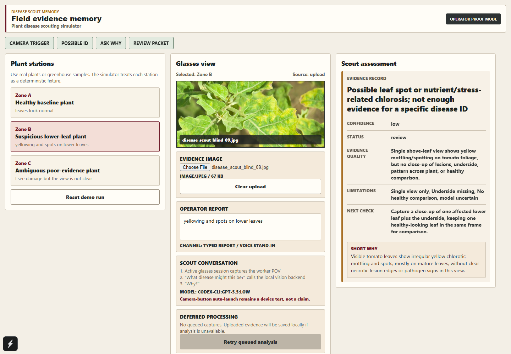

Disease Scout auto research improvements
What actually changed overnight: static demo risk turned into a live evidence-memory workflow with receipts, tests, verifier failures, and a clearer demo packet.
Executive Read
Workflow Graph
The research loop improved the proof chain, not just the UI. The strongest output is an inspectable scout record with explicit uncertainty.
Timeline
Before
- Upload flow risked feeling static or hardcoded.
- Meta integration story was abstract and not testable today.
- No clear proof that Discord project control received results.
- No durable verifier making cheating or hidden failures difficult.
- No polished proof packet for judges to inspect.
- No simple provider swap path for free Gemini API testing.
After
- Live UI upload smoke uses `codex-cli:gpt-5.5:low`.
- Backend supports `codex-cli`, `openai`, and `gemini` providers.
- Dogbot has 51 receipts under Project Control and 0 pending queue.
- Holdout verifier ran 306 rows and keeps failures visible.
- Visual audit passed with 5 screenshots and 0 failed checks.
- Demo-day status, operator card, proof packet, and network preflight now exist.
Verifier Results
| Check | Latest Result | Meaning |
|---|---|---|
| Schema | 100.0% | Outputs are structurally valid for review packets. |
| Limitations named | 100.0% | The model consistently states evidence limits. |
| Next check exists | 100.0% | The workflow pushes a useful field action instead of stopping at diagnosis. |
| No treatment advice | 100.0% | It avoids overclaiming field treatment decisions. |
| Broad state | 80.7% | Useful but not strong enough to claim field-grade plant health classification. |
| Bad recapture behavior | 83.3% | Better than before, still needs tightening around low-quality captures. |
Current Warnings
Not complete: The 10:00 morning audit did not run because the controller was stopped manually.
Network risk: Tailscale-style route responded, but venue Wi-Fi and phone route still need live confirmation.
Proof Screenshot

Live upload smoke screenshot. This is the user-visible proof path for image upload plus model output.
Competition Story
Disease Scout is field evidence memory for plant disease scouting.
The glasses-shaped value is not perfect diagnosis. It is hands-free capture, structured uncertainty, missing-evidence prompts, and supervisor-review packets that make field observations auditable.
That makes the demo stronger because judges can inspect wearer action, image evidence, worker note, model uncertainty, next check, screenshots, Discord receipts, and verifier failures.
Artifact Receipts
| Lane | Receipt | What it proves |
|---|---|---|
| Demo status | final_docs/overnight/demo-day-status.md | Current run state and warnings. |
| Ready check | final_docs/overnight/demo-ready-check.json | Web, backend, Dogbot, visual, latency, network, and artifact checks. |
| Model bridge | final_docs/overnight/live-model-smoke.json | Live model call through the current bridge. |
| Diversity | final_docs/overnight/live-model-diversity-smoke.json | Different images produced different response signatures. |
| UI upload | final_docs/overnight/live-ui-upload-smoke.json | Browser upload path works against the live backend. |
| Verifier | final_docs/overnight/visible-holdout-score-latest.md | Holdout scores and failure samples are visible. |
| Discord control | final_docs/discord-experiment-manifest.json | 51 logged experiment receipts. |
| Reaction audit | final_docs/overnight/dogbot-reaction-audit.json | Receipts are under Project Control; flagged count is 0. |
| Visual quality | final_docs/overnight/visual-professionalism-audit.md | Five screenshots passed visible quality checks. |
| Latency | final_docs/overnight/latency-demo-audit.md | Live model timing and fallback path. |